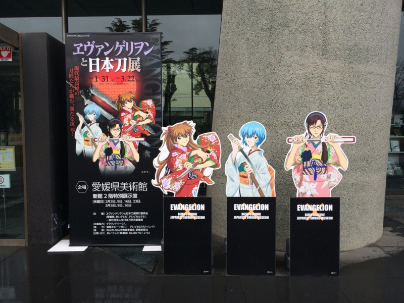
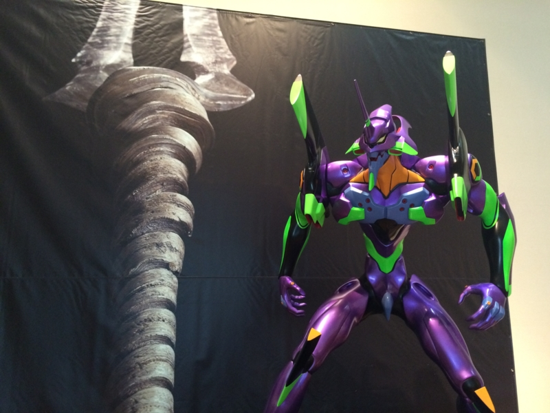
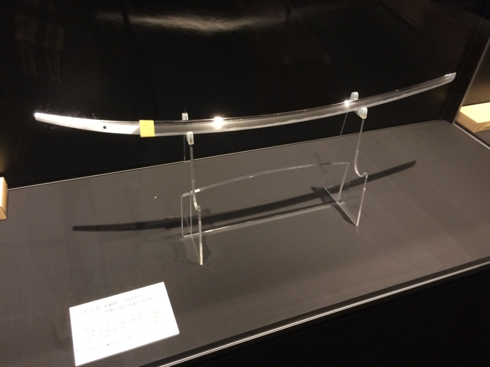
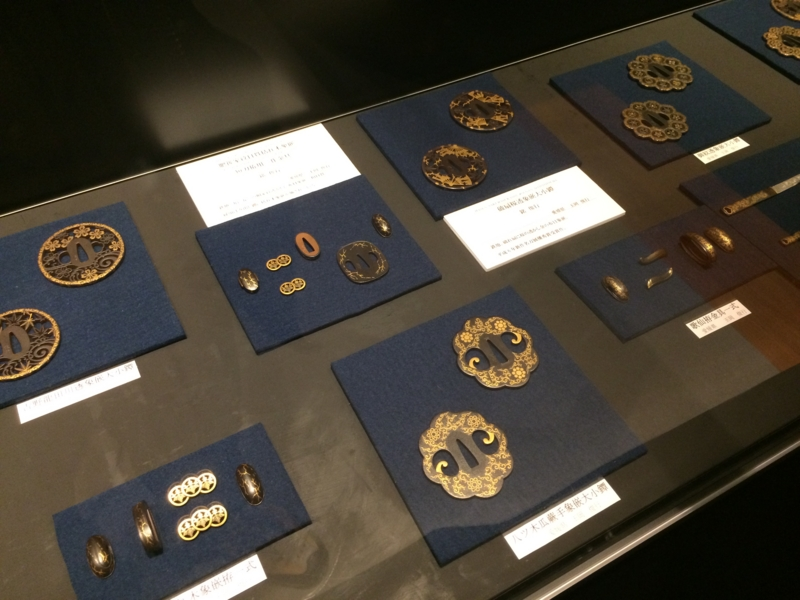
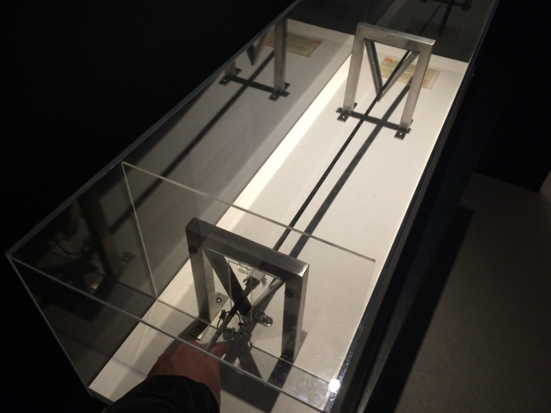
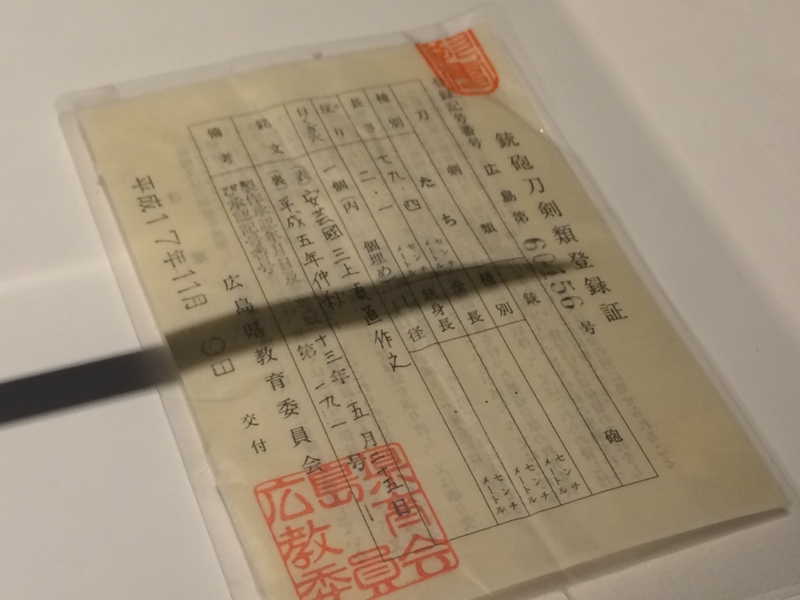
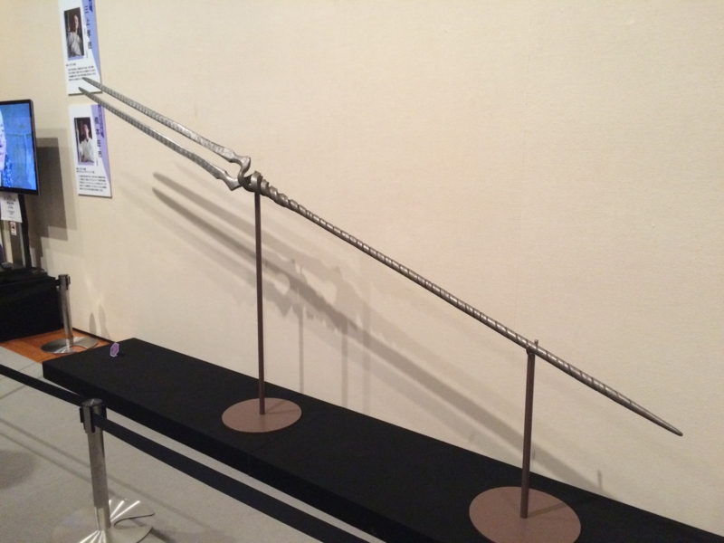
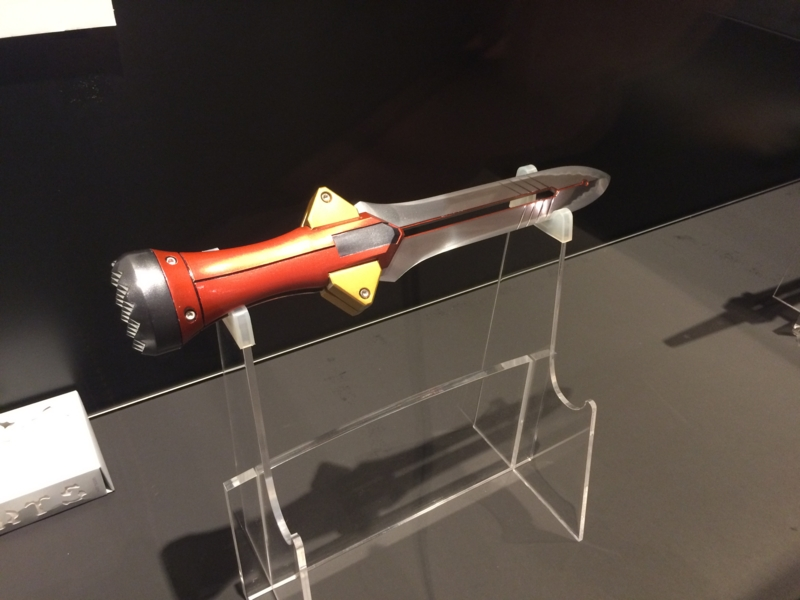
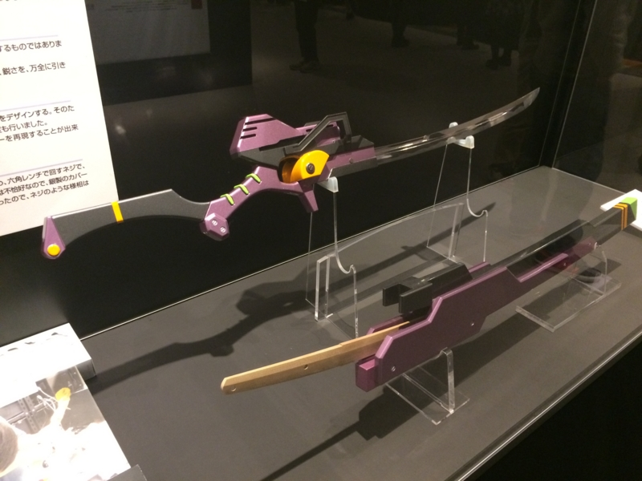
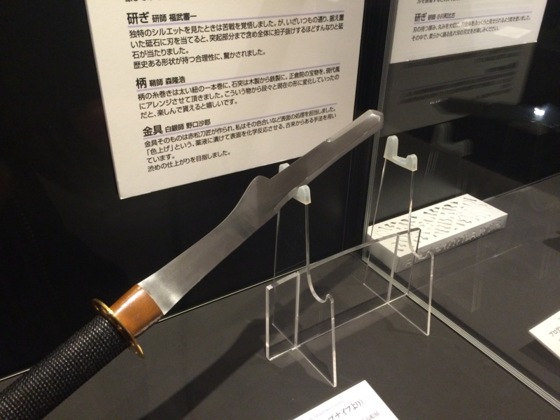

愛媛県立美術館：エヴァンゲリヲンと日本刀展、行ってきたった。
公開日：

全国の刀匠たちが挑んだヱバンゲリヲンの世界！
作品に登場する槍や刀剣、さらに作品からインスピレーションを受けたオリジナルの一振りなど、刀剣界がその伝統の技を惜しみなく注ぎ、数々の新作刀剣類を製作。「日本刀」と「ヱヴァンゲリヲン新劇場版」の奇跡的なコラボレーション。
日本の伝統技術、そして新しい日本刀の世界をぜひご覧ください。
その日は雨が降っていて、外出るのメンドクサイなーと思っていたのだけど、頑張ってお堀端までちんちん電車に乗って出かけた。
実のところ、自分はエヴァンゲリオンがめちゃくちゃ好きっていうわけではない。
小学生の頃だったか、当時弟2号がエヴァンゲリオンにハマっていたのだけど、勧められて最初に観たのが、なんかエヴァンゲリオンが食べられている回だった。フツーにキモいと思ったし、弟2号が変な辞典を購入して、使徒の名前を諳んじているのもヤバいと思っていた。ヤツが強請るので、近鉄電車で1時間かけて大阪・ミナミの映画館まで劇場版を観に連れていってあげたが、作品はどうやら未完成だったっぽくて、話が途中で終わってたのもあり、個人的にはあまり印象がよくなかった。でも、当の弟2号は興奮が冷めやらぬようで、「風月」でお好み焼きを食べる間も「量産型でてきた、量産型でてきた」とずっと呟いていた。劇中に出てきた紙飛行みたいなのがそうなのだという。意味が分からん。まぁ、母ちゃんにお小遣いもらって、大阪に遊びにこれたから別に文句はなかったが……。
そんなわけで、序だの、破だの、Qだのも、観せられてもいっこうに話の筋が飲み込めないのだけど、新しく出てきたピンクのメガネ女子は可愛いと思う（迫真
――話が逸れた。

愛媛県立美術館は初めて来たのだけど、南堀端の電停からお堀を渡って松山城の公園に入ったところ、すぐにある。二階が「エヴァンゲリヲンと日本刀展」で一階がなにかムーミンっぽい展示だったが、一階の方が女性で賑わっていたように思う。二階は混んでもなく、寂しくもなくといった人の入りで、比較的のんびりと展示を楽しむことができた。入場料は大人800円。チケットを買って通路を進むと、エヴェンゲリオン初号機が出迎えてくれる。

日本刀についての知識は、むかし新書で読んだぐらいでしか知らないが、それでも太刀と打ち刀の違いぐらいは知っている。一番大きな違いは、太刀は刃を下にして“佩く”のに対し、打ち刀は刃を上にして“差す”ことだね（正確に言えばウソだけど、だいたいそんな感じ）。個人的には、古い（太刀は平安期に作られた）太刀の方が優美で好みだ。実用性では後代の打ち刀なのだろうけれど。写真の刀身は、平安～鎌倉初期に造られた腰反りの太刀を模したものだそうで、広島の刀工の方が作っている。とても綺麗で、うっかり触ってみたくなってしまう。
")
- 作者: 小笠原信夫
- 出版社/メーカー: 文藝春秋
- 発売日: 2007/05
- メディア: 新書
- クリック: 4回
- この商品を含むブログ (8件) を見る
ちなみに、作刀の過程は『聖剣の刀鍛冶』で予習しておいた。館内でもビデオによる展示があったけれど……刃紋って泥みたいなの塗って付けるんだな？ 相槌打って鋼を鍛えたり、焼いた刀身を水にじゃばーっと漬けるシーンはよく見るけど、こういうのは観たことなかったかも。まぁ、むかしは興味なくて覚えてなかっただけかもしれないが。
 1")
- 作者: 山田孝太郎,三浦勇雄
- 出版社/メーカー: KADOKAWA / メディアファクトリー
- 発売日: 2012/09/01
- メディア: Kindle版
- この商品を含むブログを見る
それにしても、セシリーちゃんかわいい（＾ｖ＾）……ｹﾞﾌﾝｹﾞﾌﾝ。

鍔（つば）の展示。当たり前のことなのに忘れがちなのだけど、日本刀は刀身だけでは成り立たない。鍔や鞘を作る技術や、研ぎの技術なんかも総合的に受け継いでいかないと、何か一つでも欠ければ途絶えてしまう。“拵え”っていうのかな、そういうのには今まで興味なかったけれど、よく見てみるとこれも素晴らしいものだ。

“実際に日本刀を持ってみましょう”コーナー。すごい、初めて触ったよ、日本刀。

銃砲刀剣類登録証付きの本物だ。長さは79.4cm、昔風に言うと2尺6寸になるっぽい。片手で持つとずっしり重く、手に鋼が食い込むよう。ほんとうは振り回してみたかったのだけど、さすがにそれは無理だった。いつかやってみたい。

残りの展示はエヴァンゲリオンっぽいの作ってみました！ って感じ。写真撮り放題なのがいいな。無駄にパシャパシャ撮ってしまった。

とはいえ、個人的には“手鉾”なんかの模造品を見ている方が楽しかったかも。
手鉾（てぼこ：手矛とも表記される）：穂というよりもエジプトの斧刀（コピシュ）にも似たS状に湾曲した刀身が銃剣（バヨネット）のように柄の軸からせり出しているタイプの物（筑紫薙刀に似る形状）と、あまり湾曲していない菊池槍を長くした様な形状で片刃・諸刃のタイプものがある。前者は穂長16〜40cm、柄長40〜130cm程の携行しやすい小ぶりな長柄武器（正倉院所蔵記録）。後者は野外戦用に作られ穂長30〜50cm、柄長150〜180cmで『金蛭巻き(かねひるまき)』と呼ばれる柄に銀、銅、鉄製帯金を巻き付け補強した蛭巻き手鉾が時々存在する（石上神宮・長滝白山神社所蔵記録）。共に武器だけではなく警備用防犯装備・捕具としても用いられた（→薙刀の歴史の項、及び長滝白山神社文化財も参照）
古代もののマンガなんかではお馴染な武器だけど、よく見ると変な形。実用性あったのかなぁ、どうやって使ったんだろう？ わざわざこんな形に加工するの、めんどくさそうなのに。
――と、まぁ、そんな感じ。3月22日までやってるので、興味あればぜひ。
P.S.
ほんとはお土産を買いたかったのだけど、無駄遣いしないように現金をもたないようにしていたので買えなかった。お土産屋さんが CASH ONLY だなんて、ふぁっく！ まぁ、無駄遣いを防げたと思うことにしよう……。